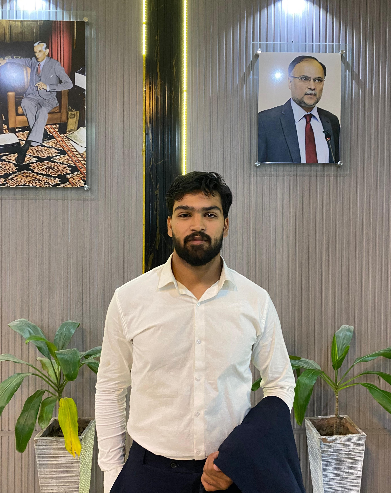

The Person Behind the Curtains

I am currently a 6th-semester student pursuing a Bachelor's Degree in Financial Technologies at FAST NUCES, Islamabad Campus. My academic journey is driven by a fascination of how quantitative finance, Capital Markets and emerging technologies intersect to create more efficient global markets.
Beyond the technical realm, I served as the Secretary General for the GenerationFAST Snow Leopards Foundation, where I learned the importance of resilient leadership.
I have also been the head of admissions team leading a team of 20+ internees in the 2025 academic intake, where I honed my organizational and communication skills.
I have also been a part of ZINDIGI PRIZE, a national initiative that recognizes young leaders in Pakistan, and served as their Provincial Coordinator for expansion. We expanded across different universities in Islamabad and Rawalpindi, and organized events to raise awareness about the prize, its mission, and female inclusion in leadership.
When I am not analyzing market simulators or writing code, you can find me immersed in Urdu poetry or crying over yet another loss of the Pakistan Cricket Team.